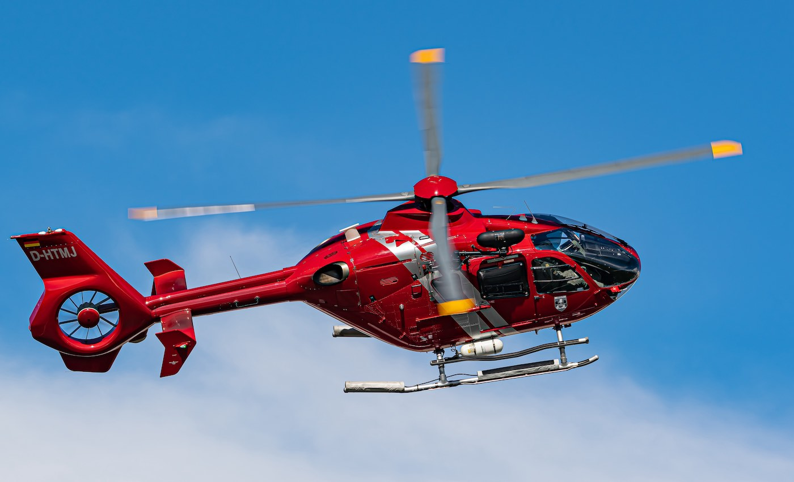

The Airbus Helicopters H135 (formerly Eurocopter EC135) is a twin-engine civil light utility helicopter produced by Airbus Helicopters. It is capable of flight under instrument flight rules and is outfitted with a digital automatic flight control system. First flying in February 1994 and developed from the prototype Messerschmitt-Bölkow-Blohm MBB Bo 108, it entered service in 1996. 1,400 units have been delivered up to September 2020, to 300 operators in 60 countries, accumulating over 5 million flight hours. It is mainly used for air medical transport (medevac), corporate transport, law enforcement, offshore wind support, and military flight training. Half of the units in service are in Europe and a quarter in North America. The H135M is the military variant.
The EC135 helicopter has: